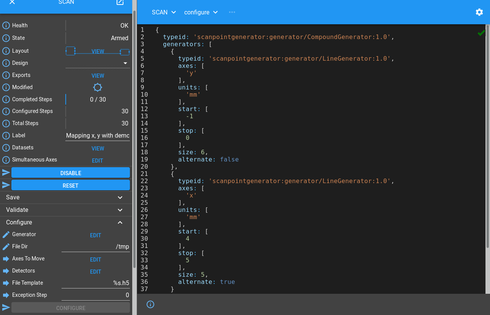
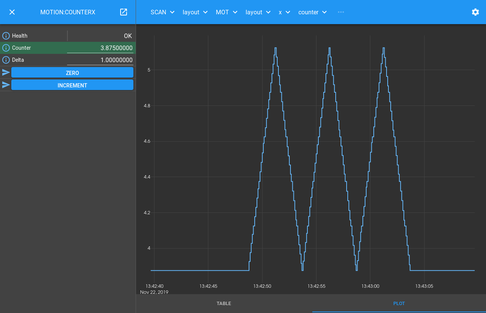

Scanning Tutorial
You should already know how to create a detector Block in the Device Layer that controls a simulated detector, and how to create a motion Block in that Device Layer that looks a bit like a simulated motion controller. Now let’s put a Scan Layer Block on top that will control the underlying Device Blocks to work together to perform a scan.
Block Hierarchy
To make this work, we want to provide a Scan Layer Block with a configure/run interface. It should then control its children concurrently during the Configure and Run phases of the scan:
Configure: It should take the union of its child Blocks’ parameters, and call the child configure() with the requested parameters. It should then report the child datasets (if any) in a dataset table of its own.
Run: It should run() both children at the same time, relying on hardware synchronization to keep them in step. It should report back progress of its children.
In the Motion Tutorial we introduced a simple Device Block. The interface it
presents is pair of moveX and moveY Methods. To control
this within a scan, we need to write a Part which knows when to call these
Methods.
In the Detector Tutorial we introduced a runnable Device Block. It presents
a configure/run interface, and includes a Dataset Table to report back the
files that it will write. This is a common design pattern for all detectors, so
we can use a DetectorChildPart to integrate it into the scan.
Our scan Block should support the same configure/run interface, so we use a
RunnableController just like in the detector.
We now end up with a hierarchy that looks like this:
The MOTION and DETECTOR Blocks are unchanged from the previous examples, we have just placed a SCAN Block in a layer above them that uses an appropriate Part to control each of its children. The nice thing about this design is that we can add another detector to control just by adding a new part to the scan.
Creating the Blocks
Let’s have a look at the Process Definition
./malcolm/modules/demo/DEMO-SCANNING.yaml:
# Define a directory to store config in
- builtin.defines.tmp_dir:
name: config_dir
# Create some Blocks
- demo.blocks.motion_block:
mri: MOTION
config_dir: $(config_dir)
- demo.blocks.detector_block:
mri: DETECTOR
config_dir: $(config_dir)
- demo.blocks.scan_1det_block:
mri: SCAN
config_dir: $(config_dir)
# Add a webserver
- web.blocks.web_server_block:
mri: WEB
To start off with, we ask for our temporary directory, which we can reference
as $(config_dir). In production we would still use a
builtin.defines.string to define this variable and pass it down in the same
way. In general we should try to follow the DRY principle: Don’t repeat
yourself. If there is a single value used in multiple places, we should define
it in one place and pass it down to where it is needed. This may require more
lines of YAML, but when the variable is changed later it will be clear where it
need to be changed.
Apart from the web server, we instantiate 3 Blocks:
The motion block from the Motion Tutorial
The detector block from the Detector Tutorial
Our new
scan_1det_blockto sit on top
Scan Block
The top level Scan Block is a scan_1det_block defined just for this demo.
Let’s take a look at ./malcolm/modules/demo/blocks/scan_1det_block.yaml
to see what one of those looks like:
- builtin.parameters.string:
name: mri
description: MRI for created block
- builtin.parameters.string:
name: config_dir
description: Where to store saved configs
- builtin.defines.docstring:
value: |
Demo scan that drives an detector like block called DETECTOR and a demo
motion controller called MOTION
- scanning.controllers.RunnableController:
mri: $(mri)
config_dir: $(config_dir)
description: |
Demo scan with a single detector and motor controller suitable for
making an interesting pattern when scanning x and y in range -10 to 10
- builtin.parts.LabelPart:
value: Mapping x, y with demo detector
- scanning.parts.DatasetTablePart:
name: DSET
- scanning.parts.SimultaneousAxesPart:
value: [x, y]
- scanning.parts.DetectorChildPart:
name: DET
mri: DETECTOR
initial_visibility: True
- demo.parts.MotionChildPart:
name: MOT
mri: MOTION
initial_visibility: True
After some parameter definitions, we get to the Controller. We use a
RunnableController like in the Detector Block, passing it the mri of
the created Block, along with where to write saved configs and its docstring.
Next we have a DatasetTablePart to report datasets just like Device Blocks.
After that is a SimultaneousAxesPart which checks that all the desired
axesToMove of a scan are within a particular set. This is needed because
a motor controller is probably setup for a specific set of axes to be scanned
together, and any subset of those axes is acceptable as an argument to
configure().
The final two parts control child Blocks, a DetectorChildPart will control
any configure/run Block with a DatasetTable, and the MotionChildPart is
written specially for our Motion Block.
Note
Child Device Blocks are not instantiated by Blocks in the Scan Layer in contrast to Blocks in the Device Layer that typically create their child Blocks in the Hardware Layer. This is because Device Blocks can potentially be used by many Scan Blocks, while Hardware Blocks are typically only used by a single Device Block.
Hooking a Simple Device Block into a Scan
To make our Motion Block with moveX() and moveY() Methods work within
a scan Block, we have to write some logic that will call these at the correct
point in a Scan Point Generator specified scan. We do this by registering
a number of hooks, like in the Detector Tutorial. Let’s look at the start of
./malcolm/modules/demo/parts/motionchildpart.py to see this:
import time
from typing import Dict, List, Optional
from annotypes import Anno, add_call_types
from malcolm.core import Block, Future, PartRegistrar
from malcolm.modules import builtin, scanning
with Anno("If >0, raise an exception at the end of this step"):
AExceptionStep = int
class MaybeMover:
"""Helper object that does async moves on an axis of a child Block only if
the last move didn't move it to that position"""
def __init__(self, child: Block, axis: str) -> None:
self._last_move: Optional[float] = None
self._move_async = child[axis + "Move_async"]
def maybe_move_async(
self, fs: List[Future], position: float, duration: float = None
) -> None:
"""If the last move was not to position, start an async move there,
adding the Future to fs"""
if self._last_move != position:
self._last_move = position
fs.append(self._move_async(position, duration))
class MotionChildPart(builtin.parts.ChildPart):
"""Provides control of a `counter_block` within a `RunnableController`"""
# Generator instance
_generator: scanning.hooks.AGenerator = None
# Where to start
_completed_steps: int = 0
# How many steps to do
_steps_to_do: int = 0
# When to blow up
_exception_step: int = 0
# Which axes we should be moving
_axes_to_move: Optional[scanning.hooks.AAxesToMove] = None
# MaybeMover objects to help with async moves
_movers: Dict[str, MaybeMover] = {}
def setup(self, registrar: PartRegistrar) -> None:
super().setup(registrar)
# Hooks
registrar.hook(scanning.hooks.PreConfigureHook, self.reload)
registrar.hook(
(
scanning.hooks.ConfigureHook,
scanning.hooks.PostRunArmedHook,
scanning.hooks.SeekHook,
),
self.on_configure,
)
registrar.hook(scanning.hooks.RunHook, self.on_run)
# Tell the controller to expose some extra configure parameters
registrar.report(scanning.hooks.ConfigureHook.create_info(self.on_configure))
After the imports and annotype definitions as in previous tutorials, we come
to the class definition. We inherit from ChildPart as we are controlling a
single child Block. As we have no new arguments to pass to __init__, we
don’t need to override it, we can just declare all the instance variables as
class variables with value None.
The setup() function is where we register our Hooks, as we will see below.
We also report that we take an extra configure argument exceptionStep.
Hooking into configure()
There is a PreConfigureHook that is called at the start of configure().
It’s purpose is reloading the last saved design to the child Block, as we
see in its documentation:
- class malcolm.modules.scanning.hooks.PreConfigureHook(part: Anno(name='APart', typ=<class 'malcolm.core.part.Part'>, description='The part that has attached to the Hook'), context: Anno(name='AContext', typ=<class 'malcolm.core.context.Context'>, description='Context that should be used to perform operations on child blocks'), **kwargs: Any)[source]
Called before configure() to get the device into a suitable state to report status and run configure. Typically will load a saved design.
We hook this to our reload()
function to accomplish this. The purpose of this is so that if someone messes
with our counter settings between scans, or another scan Block reconfigures
them, they should be restored before anything else is done.
We then hook our on_configure() method into the ConfigureHook, PostRunArmedHook and SeekHook:
@add_call_types
def on_configure(
self,
context: scanning.hooks.AContext,
completed_steps: scanning.hooks.ACompletedSteps,
steps_to_do: scanning.hooks.AStepsToDo,
# The following were passed from user calling configure()
generator: scanning.hooks.AGenerator,
axesToMove: scanning.hooks.AAxesToMove,
exceptionStep: AExceptionStep = 0,
) -> None:
child = context.block_view(self.mri)
# Store the generator and place we need to start
self._generator = generator
self._completed_steps = completed_steps
self._steps_to_do = steps_to_do
self._exception_step = exceptionStep
self._axes_to_move = axesToMove
self._movers = {axis: MaybeMover(child, axis) for axis in axesToMove}
# Move to start (instantly)
first_point = generator.get_point(completed_steps)
fs: List[Future] = []
for axis, mover in self._movers.items():
mover.maybe_move_async(fs, first_point.lower[axis])
context.wait_all_futures(fs)
This just stores the parameters to configure, ready to start the run, then moves
to the start of the scan. It does this by using a MaybeMover helper object
written just for this class. Lets look at this now:
class MaybeMover:
"""Helper object that does async moves on an axis of a child Block only if
the last move didn't move it to that position"""
def __init__(self, child: Block, axis: str) -> None:
self._last_move: Optional[float] = None
self._move_async = child[axis + "Move_async"]
def maybe_move_async(
self, fs: List[Future], position: float, duration: float = None
) -> None:
"""If the last move was not to position, start an async move there,
adding the Future to fs"""
if self._last_move != position:
self._last_move = position
fs.append(self._move_async(position, duration))
When we construct this object, we pass the child Block and the axis we expect
it move. It then grabs the asynchronous version of the axis move Method. The
Block object supports both item and attribute axis, so child.xMove and
child["xMove"] are equivalent. It also creates asynchronous versions of
these methods accessible with child.xMove_async and child["xMove_async"]
that kick off the Method, and return Future objects that can be waited on,
and will hold the result of the method when it is finished.
Hooking into run()
We also hooked our on_run() Method into the RunHook. Let’s look at what it
does:
@add_call_types
def on_run(self, context: scanning.hooks.AContext) -> None:
# Start time so everything is relative
point_time = time.time()
for i in range(
self._completed_steps, self._completed_steps + self._steps_to_do
):
# Get the point we are meant to be scanning
point = self._generator.get_point(i)
# Update when the next point is due and how long motor moves take
point_time += point.duration
move_duration = point_time - time.time()
# Move the children (instantly) to the beginning of the point, then
# start them moving to the end of the point, taking duration
# seconds, populating a list of futures we can wait on
fs: List[Future] = []
for axis, mover in self._movers.items():
mover.maybe_move_async(fs, point.lower[axis])
mover.maybe_move_async(fs, point.upper[axis], move_duration)
# Wait for the moves to complete
context.wait_all_futures(fs)
# Update the point as being complete
assert self.registrar, "Part has no registrar"
self.registrar.report(scanning.infos.RunProgressInfo(i + 1))
# If this is the exception step then blow up
assert i + 1 != self._exception_step, (
"Raising exception at step %s" % self._exception_step
)
We iterate through each of the step indexes that we need to produce, getting a
scanpointgenerator.Point object for each one. We pick out the lower and upper
bounds of the axes we were told to move during that Point, move them
instantaneously to the lower bound, then move them to the upper bound
so they finish together at the end of the Point duration, all using our mover
helper object defined in on_configure(). If a move occurs, a Future will
be added to the fs list, which we can wait on by using
wait_all_futures().
Finally we report() a RunProgressInfo with the
current step number so the client knows how much of the scan is complete, and
check the current step number to see if we were meant to blow up here.
Running a Scan
Let’s start up the example and see it in action:
[me@mypc pymalcolm]$ pipenv run imalcolm malcolm/modules/demo/DEMO-SCANNING.yaml
Loading malcolm...
Python 3.7.2 (default, Jan 20 2020, 11:03:41)
Type 'copyright', 'credits' or 'license' for more information
IPython 7.19.0 -- An enhanced Interactive Python. Type '?' for help.
Welcome to iMalcolm.
self.mri_list:
['MOTION:COUNTERX', 'MOTION:COUNTERY', 'MOTION', 'DETECTOR', 'SCAN', 'WEB']
# To create a view of an existing Block
block = self.block_view("<mri>")
# To create a proxy of a Block in another Malcolm
self.make_proxy("<client_comms_mri>", "<mri>")
block = self.block_view("<mri>")
# To view state of Blocks in a GUI
!firefox localhost:8008
In [1]:
Then run a scan by configuring and running with a generator. If you have completed the Detector Tutorial then some of the lines will be in your IPython history and you can get them back by pressing the up arrow:
In [1]: from scanpointgenerator import LineGenerator, CompoundGenerator
In [2]: from annotypes import json_encode
In [3]: yline = LineGenerator("y", "mm", -1, 0, 6)
In [4]: xline = LineGenerator("x", "mm", 4, 5, 5, alternate=True)
In [5]: generator = CompoundGenerator([yline, xline], [], [], duration=0.5)
In [6]: json_encode(generator)
Out[6]: '{"typeid": "scanpointgenerator:generator/CompoundGenerator:1.0", "generators": [{"typeid": "scanpointgenerator:generator/LineGenerator:1.0", "axes": ["y"], "units": ["mm"], "start": [0.0], "stop": [1.0], "size": 6, "alternate": false}, {"typeid": "scanpointgenerator:generator/LineGenerator:1.0", "axes": ["x"], "units": ["mm"], "start": [0.0], "stop": [1.0], "size": 5, "alternate": true}], "excluders": [], "mutators": [], "duration": 0.5, "continuous": true}'
Then we can open http://localhost:8008/gui/SCAN to see the SCAN Block on the left. If we expand the Configure method and click Edit by the Generator field we can paste in our JSON, then set fileDir to “/tmp” and click Configure to arm:
You can now click Run, and a scan will be run. Clicking through the layers SCAN -> Layout -> MOT -> Layout -> x -> COUNTER -> Info will get you to http://localhost:8008/gui/SCAN/layout/MOT/layout/x/counter/.info and clicking on the PLOT tab will show the x axis has moved on its snake scanning trajectory:
The DETECTOR block will write 30 frames to /tmp/DET.h5 as the previous
example. The reason the filename and dataset names are a little different is
because the detector dataset takes its name from the parent controlling part,
defaulting to det if not specified. In scan_block.yaml we defined the
for DETECTOR to have name DET, hence the name of the written file.
Apart from this, the file is identical to previous example.
From here you can click Configure again, run another scan, and try pausing,
resuming and seeking within the scan. You can seek by setting completedSteps
after pausing, or by running the pause() method again while paused with
a different lastGoodStep value. You could try setting an exceptionStep
to simulate a scan that fails at a particular point.
See also
RunnableStates has more information about what functions you can
run in different Block states.
Conclusion
This tutorial has given us an understanding of how a Scan Layer Block can co-ordinate various Device Layer Blocks to perform a continuous scan. In the next tutorial we will see how to add an EPICS areaDetector Device Block to our scan, and make a scan with multiple detectors.